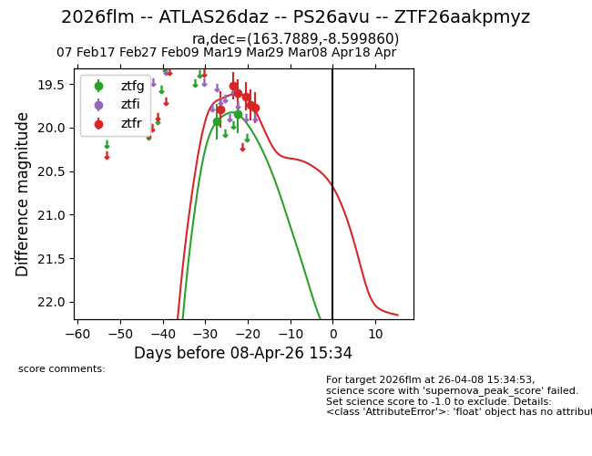
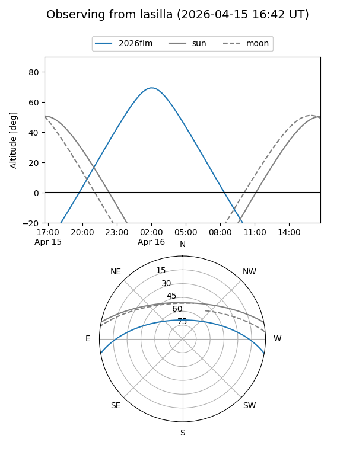
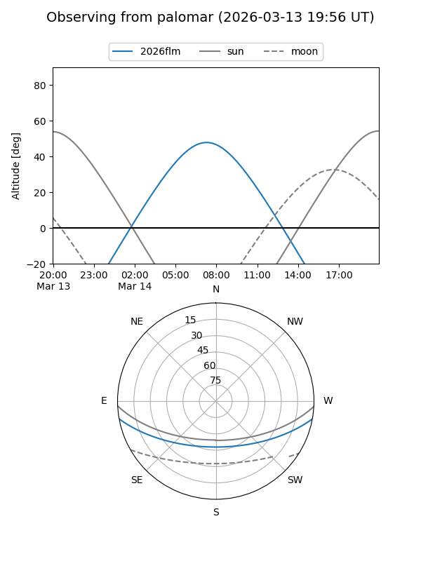
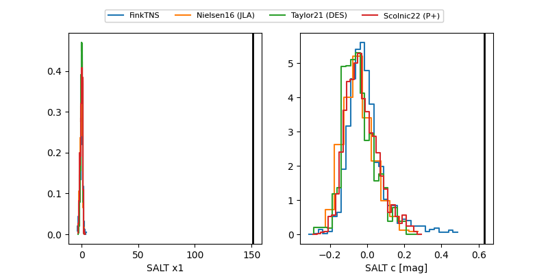

2026flm
Target 2026flm at 2026-04-08 15:40
Aliases and brokers:
FINK: link
Lasair: link
ALeRCE: link
TNS: link
YSE: link
alt names
ZTF26aakpmyz (ztf,fink_ztf)
2026flm (tns,yse)
ATLAS26daz (atlas)
PS26avu (panstarrs)
Coordinates:
equatorial (ra, dec) = 163.7889,-8.59986
equatorial (HMS+DMS) = 10:55:09.33,-08:35:59.50
galactic (l, b) = (260.5866,+44.50234)
Flags:
Photometry:
last ztfg=19.85, ztfr=19.77
2 ztfg, 6 ztfr detections
Lightcurve

Visibility


Additional plots
